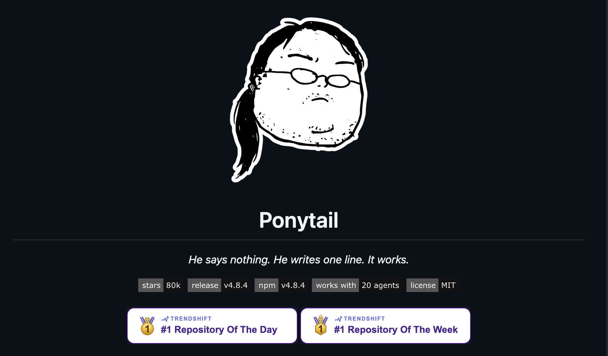

一个让 AI 编程更“懒”、更少写废代码的 skill

这期视频给大家推荐一个让 AI 编程更“懒”、更少写废代码的 skill。
不知道大家有没有发现，现在很多 AI 编程工具有个毛病：
你只是想修一个小 bug，加一个小优化。
你可能只是简简单单一句话，想着简单实现一下，结果 AI 大刀阔斧地往你的项目里注入一大坨代码，给你加一堆抽象层，大改你的代码，加一堆封装函数，你想检查一遍都看不过来。
今天介绍一个有意思的项目，叫 Ponytail。
它的核心思路很简单：让 AI 编程时变懒。
但这个“懒”不是偷懒，而是像一个见过太多烂代码的资深工程师一样，先问一句：
这东西真的需要写吗？
Ponytail 会强制 AI 按一个顺序思考：
- 能不做就不做。
- 代码库里已有的就复用。
- 标准库能解决就别造轮子。
- 浏览器、数据库、系统原生能力能解决，就别加依赖。
- 实在要写，也写最少能工作的版本。
它还有几个模式。
lite 是轻度模式，AI 会照做，但提醒你有没有更简单方案。
full 是默认模式，优先最小实现。
ultra 就比较狠了，它会直接挑战需求：这个功能现在真的值得做吗？
我觉得它最有价值的地方，不是让 AI 少写几行代码，而是改变 AI 的默认倾向。
以前 AI 很容易把简单问题复杂化。
Ponytail 则会不断把它拉回来：
- 别预留未来。
- 别为了一个实现写接口。
- 别为了一个场景加配置。
- 别为了三行逻辑引入一个包。
如果你经常用 Codex、Claude Code 或 OpenCode 写项目，这个 skill 还挺值得试试。
一句话总结：
Ponytail 不是让 AI 更会写代码，而是让 AI 更懂什么时候不该写代码。
最近使用了一个星期，体验还是不错的，所以推荐给大家。更多的使用方式大家可以去问下 AI。
如何安装
直接告诉 Codex 安装这个 skill：
https://github.com/DietrichGebert/ponytail
然后输入指令指定模式：
@ponytail ultra